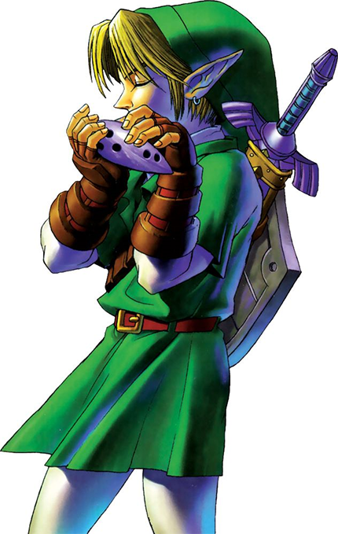

MÚSICAS
As melodias que moldam o tempo e o destino.
A Ocarina do Tempo
Um instrumento lendário com o poder de manipular o próprio tempo. A Ocarina do Tempo é um dos artefatos mais importantes da história de Hyrule, transmitida pela Família Real de Hyrule.
A princesa Zelda confia esta ocarina sagrada a Link antes de fugir de Ganondorf. Com ela, Link pode tocar melodias mágicas que controlam vários aspectos do mundo.
A ocarina é tocada usando cinco botões, correspondentes a diferentes notas musicais. Dominar essas músicas é essencial para completar a jornada de Link.

Melodias Mágicas
Canção de Zelda
Princesa Zelda (Castelo de Hyrule)
← ↑ → ← ↑ →
EfeitosAbre portas com o símbolo da Triforce, invoca a chuva e prova a ligação de Link com a Família Real.
Canção de Epona
Malon (Fazenda Lon Lon)
↑ ← → ↑ ← →
EfeitosChama a Epona quando tocada em Hyrule Field. Também aumenta a produção de leite da Lon Lon e acalma as vacas.
Canção de Saria
Saria (Bosque Sagrado)
↓ → ← ↓ → ←
EfeitosPermite comunicar-se com Saria, acerta inimigos em certas áreas e revela segredos.
Canção do Sol
Tumba da Família Real (Cemitério de Kakariko)
→ ↓ ↑ → ↓ ↑
EfeitosAltera o dia para a noite ou a noite para o dia, atordoa ReDeads e Gibdos e revela segredos.
Canção do Tempo
Princesa Zelda (antes de fugir)
→ A ↓ → A ↓
EfeitosAbre a Porta do Tempo e remove os Blocos do Tempo. A canção mais importante do jogo.
Canção da tempestade
Carpinteiro do Moinho
A ↓ ↑ A ↓ ↑
EfeitosInvoca chuva e tempestades, abre grutas secretas e drena a água em certas áreas.
Minueto da Floresta
Sheik (Clareira Sagrada da Floresta)
A ↑ ← → ←
EfeitosTeleporta Link para a entrada do Templo da Floresta na Clareira Sagrada da Floresta.
Bolero do Fogo
Sheik (Cratera da Montanha da Morte)
↓ A ↓ A → ↓ → ↓
EfeitosTeleporta Link para a entrada do Templo do Fogo na Cratera da Montanha da Morte.
Serenata da Água
Sheik (Caverna de Gelo)
A ↓ → → ←
EfeitosTeleporta Link para a entrada do Templo da Água no Lago Hylia.
Noturno das Sombras
Sheik (Vila Kakariko)
← → → A ← → ↓
EfeitosTeleporta Link para a entrada do Templo das Sombras no Cemitério Da Vila Kakariko
Réquiem do Espírito
Sheik (Colosso do Deserto)
A ↓ A → ↓ A
EfeitosTeleporta Link para a entrada do Templo do Espírito no Colosso do Deserto.
Prelúdio da Luz
Sheik (Templo do Tempo)
↑ → ↑ → ← ↑
EfeitosTeleporta Link para o Templo do Tempo. A última canção de teletransporte aprendida.